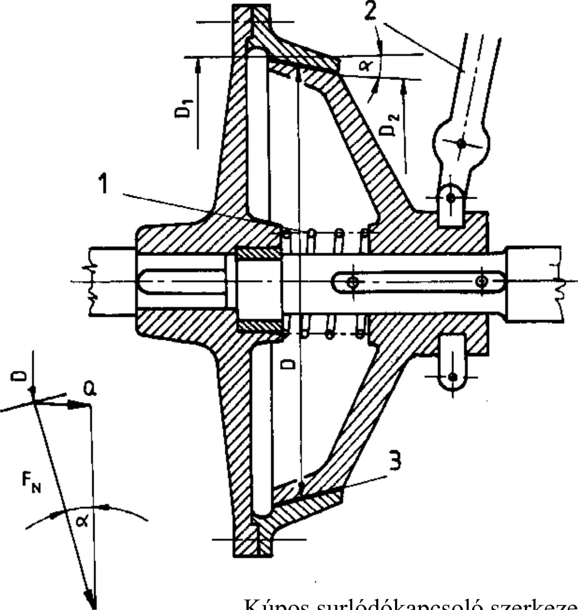

18. Kúpos kötések 18. Kúpos kötések A kúposkötések az erőzáró tengelykötések közé tartoznak. Az erőzáró tengelykötésekre jellemző, hogy a felfekvő felületeken valamilyen módon nyomás keletkezik és az ennek következtében ébredő súrlódás megakadályozza az alkatrészek tengelyirányú eltolódását; ill. elfordulását. Az erőzáró kötéseket egyaránt alkalmazhatjuk erő (287.ábra) és nyomaték (288. ábra) átszármaztatására. 18.1. Erőzáró kötés kialakulása A felületeket összeszorító normális irányú erőt létrehozhatjuk csavarral, ékkel, rugóval vagy szilárd illesztésű kötésnél az összekötött elemek rugalmas alakváltozásával. Minél egyenletesebb az érintkező felületeken a normális irányú erő, a p felületi nyomás eloszlása, annál jobb a kötés erőés nyomatékátvitele, valamint hengeres felületek esetén az elemek központosítása. A súrlódási erő nagysága a nyomáson kívül függ a súrlódási tényezőtől is, amelyet pedig döntő mértékben befolyásol az érintkező felületek anyaga, a felütetek minősége, azaz a felületi érdesség, valamint a felület állapota, pontosabban a súrlódási állapot. A felületi érdességet tekintve a kisebb érdesség, a felület állapotát tekintve pedig a száraz, nem kent felület a kedvezőbb. A súrlódási tényező függ a mozgásállapottól is. Ezért megkülönböztetünk nyugvósúrlódást, amelynél a súrlódási tényező p0, és csúszósúrlódást, amelynél a súrlódási tényező p. Mivel a p csúszósúrlódási tényező kisebb, mint a p0 nyugvósúrlódási tényező, ezért biztonságból mindig a csúszósúrlódási tényezővel számolunk, amelynek tájékoztató értékeit a 23. táblázat tartalmazza. Megengedett felületi terhelések - acél acélon vagy pmeg=50,0...90,0 MPa acélöntvényen - acél öntöttvason pmeg=30,0...50,0 Mpa 287. ábra 288. ábra Súrlódási tényezők értéke csúszósúrlódáskor 23. táblázat Súrlódó anyagpár Száraz súrlódás esetén, p Olajozott felület esetén, p acél / acél vagy öntött acél 0,065. ..0,16 0,055. ..0,12 acél / öntöttvas vagy bronz 0,15. ..0,20 0,03. ..0,06 öntöttvas / öntöttvas vagy bronz 0,15. ..0,25 0,02.. .0,10 acél / Al-Mg ötvözet 0,05.. .0,96 acél / sárgaréz 0,05. ..0,14 18.2. Erőviszonyok kúpfelületen A kúpos elempárral létesített kötés a gépgyártásban általánosan használatos erőzáró kapcsolat. A súrlódókapcsolók legrégibb, de egyben a legegyszerűbb megoldása a kúpos kapcsoló. A (289.b ábra) belső, kúpos súrlódókapcsolót ábrázol, ahol az egyik kapcsolófél kúpos súrlódó felületéhez Q erővel nyomja az erőzáró rugó a másik kapcsolófél ugyancsak kúpos súrlódó felületét. A kúpos felületeken kis tengelyirányú kapcsolóerővel lehet megfelelő nagy súrlódóerőt, kerületi erőt kelteni. A kúpfelületen fellépő erőviszonyokat a 289.a ábra szemlélteti. Ahol: Q tengelyirányú erő D a tengelykapcsoló közepes átmérője Fn súrlódó felületekre merőleges erő a kúpszög Az összekötendő alkatrészeket a közös kúppaláston játékmentesen központosítja. Ha az a kúpszög kisebb, mint a súrlódási félkúpszög, akkor a kötés önzáró. Bizonyos körülmények között hatásosan tömít. A kúpfelületeken a biztonság kedvéért a megcsúszás elkerülésére reteszkötést is szoktak elhelyezni (291. ábra). Kúpos surlódókapcsoló szerkezete 1 erőzáró rugó, Erőviszonyok kúpfelületen 2 kapcsolószerkezet, 3 súrlódóbetét 289. ábra a) b) 81
